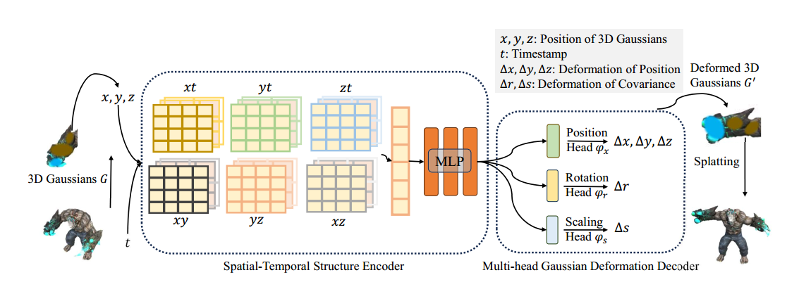
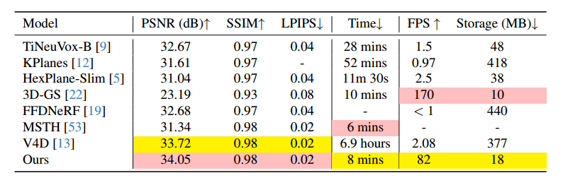
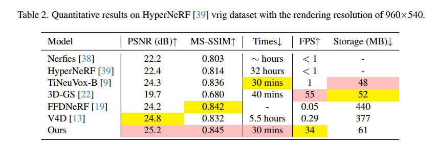
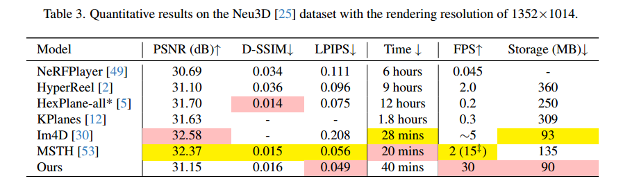

论文泛读之4DGS
本文最后更新于 2025年11月11日 下午
单目动态+多视角视频：4D Gaussian Splatting for Real-Time Dynamic Scene Rendering [CVPR2024]
😄contribution:
- 提出了一种高效4DGS溅射框架，通过在时间上建模高斯运动和高斯形状变化，结合高效高斯变形场，以实现高效处理。
- 提出了一种多分辨率编码的方法，旨在通过时间-空间结构编码器编码动态场景。
- SOTA。
个人感觉和NeRF那一套方法有点像，NeRF是将场景信息存储在MLP中，4DGS是将运动规律存储在MLP中，Deformable 3DGS是只用了MLP，本文多用了多分辨率平面结构加速收敛也像NeRF后面的发展。

⛺method:
-
时空结构编码器：多分辨率平面用的是4D-Kplanes,具体是6个多分辨率平面 (),随后再加上一个MLP作为Encoder。
-
高斯属性预测头：是几个tiny MLP输入MLP编码的向量输出位置、旋转、缩放增量。
整个流程是：- 先在多分辨率平面插值拼接得到特征向量。
- 输入Encoder MLP 得到编码向量。
- 输入属性预测头MLP 得到增量 。
- 最后加上初始值得到最终属性。
-
损失函数：用了render损失+基于网格的全变分损失。
没细了解这个基于网格的全变分损失是什么
⭐experiment:



💭discussion:
之前认为单目动态重建和多视角视频重建是两种不同的技术路线，认为一个是相机和场景有相互运动一个是相机和场景没有相互运动，也没细想。现在想想好像是相通的？单目是多时间点的单视角观察，没有多视角监督几何约束不强重建也比较困难。
- 以这篇文章为例，单目流程先用colmap提取所有帧用来初始化GS，前3k次迭代优化一个caononical场，后面通过loss联合优化MLP和GS场景。单目视频动态重建有一个尺度模糊 (Non-Metric) 的问题并且由于缺乏约束，NVS的效果不如多视角视频好。
- 多视角视频是用多视角视频的第一帧用colmap提取点云初始化GS，后面通过loss联合优化MLP和GS场景。不同的是在计算loss的时候可以优化更多视点的render loss，这样可以提供多视角约束，NVS的效果也更好。
- 可能理解有误我再细细了解一下。
论文泛读之4DGS
https://atat1010.github.io/2025/11/11/papers_note/4DGS/